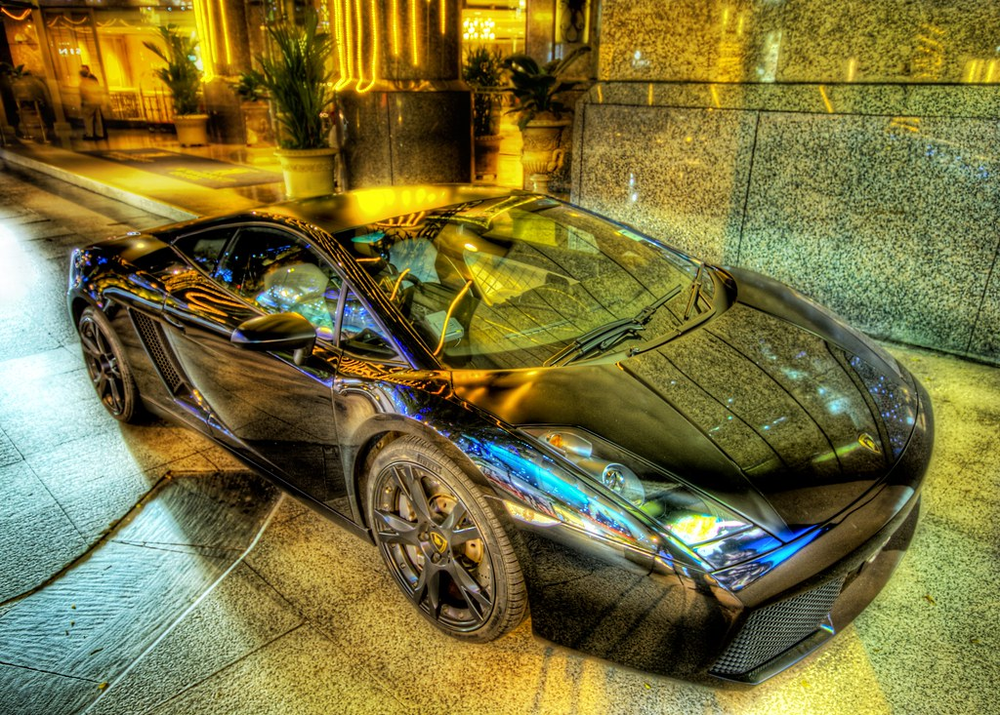

Professor Rambo may look like a human, but he definitely is an unusual person in man ways. His physical and emotional traits can be somewhat relatable or shocking.
Rambo is 9 feet tall. This would make him the tallest man on Earth. He's even one of the tallest on Vortex 1214b due to the average height of a male being 7 and a half feet tall. More shocking than his height is his weight. He weighs 1,220 lbs, heavier than the heaviest man on Earth and one of the heaviest on Vortex 1214b. The heaviest on that planet would be 2,388 lbs which is the same as being over 600 lbs on Earth, which is considered morbidly obese.
When it comes to personality, this is where people on Earth can find Rambo somewhat relatable. He can be super nice, and from a blink of an eye, he can be a mindless predator. This gentleman is sneaky and detail oriented. H does prefer to be alone most times. Going his on pace and doing things he wants to do, although he tries to fit in and engage with others. He represents a villain due to him being destructive and careless at times to people and objects, just to make him feel good. In the end, its all done to hide his insecurities and try to make himself less vulnerable.
His mobility tends to fall in both his pyhiscal traits and with technology. Because he has special capabilities, he can levitate and teleport. But because he tries to fit in on his planet to look somewhat "normal", he has a futuristic car and would sometimes take public transit. Vortex 1214b has a lot of advancements, public transit there is more efficient compare to Earth's. You can say that he thinks that Earth is 100s of years behind.
"Sometimes it's fun to be impractical" by Trey Ratcliff is licensed under CC BY-NC-SA 2.0

"Hiyoshi Space Gate" by Sprengben is licensed under CC BY-NC-SA 2.0